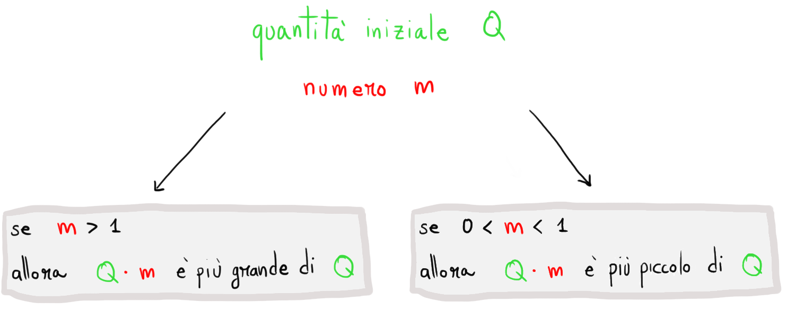

/ 1.10) Operazioni tra funzioni: interpretazione grafica
1.10
Operazioni tra funzioni: interpretazione grafica
Introduzione
Prendiamo due numeri, \(\color{rgb(255, 140, 0)}{10}\) e \(\color{red}{2}\).
Come sappiamo è possibile svolgere varie operazioni tra questi numeri, il loro risultato è ancora un numero.
Consideriamo due funzioni
\[
\color{rgb(255, 140, 0)}{}y\color{black}{} = f\left(\color{blue}{x}\color{black}{}\right)
\]
\[
\color{red}{}\boldsymbol{z}\color{black}{} = g\left(\color{blue}{x}\color{black}{}\right)
\]
Possiamo addizionarle, sottrarle, moltiplicarle o dividerle tra loro, ottenendo in ciascun caso una nuova funzione.
Addizione di funzioni
\[
s(\color{blue}{}x\color{black}{}) =
\underset{\color{rgb(255, 140, 0)}{}y}{\color{rgb(255, 140, 0)}{}\underbrace{\color{black}{}f(\color{blue}{x})}} +
\underset{\color{red}{}\boldsymbol{z}}{\color{red}{}\underbrace{\color{black}{}g(\color{blue}{x})}}
\]
Sottrazione di funzioni
\[
d(\color{blue}{}x\color{black}{}) =
\underset{\color{rgb(255, 140, 0)}{}y}{\color{rgb(255, 140, 0)}{}\underbrace{\color{black}{}f(\color{blue}{x})}} -
\underset{\color{red}{}\boldsymbol{z}}{\color{red}{}\underbrace{\color{black}{}g(\color{blue}{x})}}
\]
Prodotto di funzioni
\[
p(\color{blue}{}x\color{black}{}) =
\underset{\color{rgb(255, 140, 0)}{}y}{\color{rgb(255, 140, 0)}{}\underbrace{\color{black}{}f(\color{blue}{x})}} \,\,\cdot\,\,
\underset{\color{red}{}\boldsymbol{z}}{\color{red}{}\underbrace{\color{black}{}g(\color{blue}{x})}}
\]
Frazione di funzioni
\[
q(\color{blue}{}x\color{black}{}) =
\dfrac{\overset{\color{rgb(255, 140, 0)}{}y}{\color{rgb(255, 140, 0)}{}\overbrace{\color{black}{}f(\color{blue}{x})}}}{\underset{\color{red}{}\boldsymbol{z}}{\color{red}{}\underbrace{\color{black}{}g(\color{blue}{x})}}}
\]
Esempio 2
Consideriamo le funzioni
\[
\begin{align*}
f&:\quad
\color{rgb(255, 140, 0)}{} y \color{black}{} \,=\, 2 + \color{blue}{x}
\\\\
g&:\quad
\color{red} \boldsymbol{z} \color{black}{} \,=\, 3 - 5\,\color{blue}{x}\color{black}{} + ln(\color{blue}{x}\color{black}{})
\end{align*}
\]
Sommiamo le due funzioni e "battezziamo" la funzione ottenuta con il nome di \(s\) (la cui scelta è arbitraria, potremmo adottare un nome qualsiasi).
\[
\begin{align*}
s(\color{blue}{x}\color{black}{}) &=
f(\color{blue}{x}\color{black}{}) + g(\color{blue}{x}\color{black}{}) =
\\\\
&= \underset{\color{rgb(255, 140, 0)}{y}}{\color{rgb(255, 140, 0)}{}\underbrace{\color{black}{}2 + \color{blue}{x}}} +
\underset{\color{red}{\boldsymbol{z}}}{\color{red}{}\underbrace{\color{black}{}3 - 5\,\color{blue}{x}\color{black}{} + ln(\color{blue}{x}\color{black}{})}} =
\\\\
&= 5 - 4\color{blue}{}x\color{black}{} + ln(\color{blue}{x}\color{black}{})
\end{align*}
\]
Esempio 3
Consideriamo le funzioni
\[
\begin{align*}
f&:\quad
\color{rgb(255, 140, 0)}{} y \color{black}{} \,=\, 2\color{blue}{}x\color{black}{} - 3
\\\\
g&:\quad
\color{red} \boldsymbol{z} \color{black}{} \,=\, 1 - sin(\color{blue}{x}\color{black}{})
\end{align*}
\]
Moltiplichiamo le due funzioni ed assegnamo alla funzione ottenuta il nome arbitrario \(p\).
\[
\begin{align*}
s(\color{blue}{x}\color{black}{}) &=
f(\color{blue}{x}\color{black}{}) \cdot g(\color{blue}{x}\color{black}{}) =
\\\\
&= \underset{\color{rgb(255, 140, 0)}{y}}{\color{rgb(255, 140, 0)}{}\underbrace{\color{black}{}(2\color{blue}{}x\color{black}{} - 3)}} \cdot
\underset{\color{red}{\boldsymbol{z}}}{\color{red}{}\underbrace{\color{black}{}\left(1 - sin(\color{blue}{x}\color{black}{})\right)}} =
\\\\
&= 2\color{blue}{}x\color{black}{} - 2\,\color{blue}{}x\color{black}{}\,sin(\color{blue}{}x\color{black}{})
-3 + 3\,sin(\color{blue}{}x\color{black}{})
\end{align*}
\]
Esempio 4
Consideriamo le funzioni
\[
\begin{align*}
f&:\quad
\color{rgb(255, 140, 0)}{} y \color{black}{} \,=\, sin(\color{blue}{x}\color{black}{}) + 1
\\\\
g&:\quad
\color{red} \boldsymbol{z} \color{black}{} \,=\, \color{blue}{x}\color{black}{} - 4
\end{align*}
\]
Svolgiamo la frazione tra le due funzioni ed assegnamo alla funzione ottenuta il nome arbitrario \(q\).
\[
\begin{align*}
q(\color{blue}{x}\color{black}{}) &=
\dfrac{f(\color{blue}{x}\color{black}{})}{g(\color{blue}{x}\color{black}{})} =
\\\\
&= \dfrac{\overset{\color{rgb(255, 140, 0)}{y}}{\color{rgb(255, 140, 0)}{}\overbrace{\color{black}{}sin(\color{blue}{x}\color{black}{}) + 1}}}{\underset{\color{red}{\boldsymbol{z}}}{\color{red}{}\underbrace{\color{black}{}\color{blue}{x}\color{black}{} - 4}}} =
\\\\
&= \dfrac{sin(\color{blue}{x}\color{black}{}) + 1}{\color{blue}{x}\color{black}{} - 4}
\end{align*}
\]
Osservazione
La funzione \(g\) non è definita per \(\color{blue}{x}\color{black}{} = \color{blue}{4}\).
Questa caratteristica viene "ereditata" dalla funzione \(q\)
L'obiettivo di questo paragrafo è analizzare in che modo il grafico delle funzioni somma e moltiplicazione dipende dal grafico delle funzioni di partenza \(f\) e \(g\).
Somma di funzione: interpretazione grafica
Esempio 1
Consideriamo le funzioni
\[
\begin{align*}
&f(x) = x
\\\\
&g(x) = sin(x)
\end{align*}
\]
Nel grafico interattivo riportato di seguito sono rappresentati i grafici di entrambe le funzioni.
Per ottenere il grafico della funzione somma \(f(x) + g(x)\) procediamo come segue:
Per ciascun valore di \(x\) disegnamo un segmento di lunghezza \(g(x)\).
Il segmento sarà
sopra l'asse delle ascisse se \(g(x) \gt 0\)
sotto l'asse delle ascisse nel caso in cui \(g(x) \lt 0\)
(Premete il pulsante presente nel grafico)
Trasliamo verticalmente i segmenti fino a che il loro estremo che giace sull'asse \(x\) si trovi sul grafico di \(f(x)\)
(Trascinate verso destra lo slider presente nel grafico)
Il profilo che si delinea in questo modo è quello della funzione somma \(f(x) + g(x)\)
(Per verificarlo premete il pulsante presente nel grafico)
⚠️
La seguente funzionalità è disponibile solo da pc, non per gli smartphone
⚠️
Provate ad inserire due funzioni a piacere attraverso i campi di inserimento presenti nel grafico e riapplicate il procedimento descritto.
Riuscite a prevedere quale sia il grafico della funzione somma?
Esempio 2
Consideriamo le funzioni
\[
\begin{align*}
&f(x) = \dfrac{1}{2}x
\\\\
&g(x) = x - 1
\end{align*}
\]
Provate a procedere come nell'Esempio 1 per visualizzare il grafico della funzione somma
\(f + g\) a partire da quelli delle funzioni \(f\) e \(g\).
Prodotto di funzione: interpretazione grafica
Prima di vedere qualche esempio riflettiamo sulla moltiplicazione.
Prendiamo una quantità di partenza, \(\color{rgb(0, 202, 0)}{3}\).
Siamo abituati a pensare che l'effetto della moltiplicazione sia sempre quello di ingrandire la quantità di partenza.
Ad esempio, moltiplicando la quantità di partenza per \(\color{red}{2}\), otteniamo \(6\):
\[
\color{rgb(0, 202, 0)}{3} \color{red}{} \,\,\cdot\,\, 2 \color{black}{} = 6
\]
Tuttavia ciò non è sempre vero: se moltiplichiamo la quantità di partenza per un numero
compreso tra \(0\) e \(1\), l'effetto che otteniamo è opposto, il risultato è più piccolo della quantità iniziale.
Ad esempio:
\[
\color{rgb(0, 202, 0)}{3} \color{red}{} \,\,\cdot\,\, 0.1 \color{black}{} = 0.3
\]
Ciò non dovrebbe sorprenderci. Infatti, la moltiplicazione per \(0.1\) può esser letta come una divisione per \(10\):
\[
\color{rgb(0, 202, 0)}{3} \color{red}{} \,\cdot\, 0.1 \color{black}{} \,=\, \color{rgb(0, 202, 0)}{3} \color{red}{} \,\cdot\, \dfrac{1}{10} \color{black}{} \,=\, \color{red}{}\dfrac{\color{rgb(0, 202, 0)}{3}}{10} \color{black}{} \,=\, 0.3
\]
Negli esempi che seguono dovremo tenere a mente il seguente fatto:

Attraverso il seguente quiz potete allenarvi a visualizzare sul grafico cartesianol'effetto della moltiplicazione: